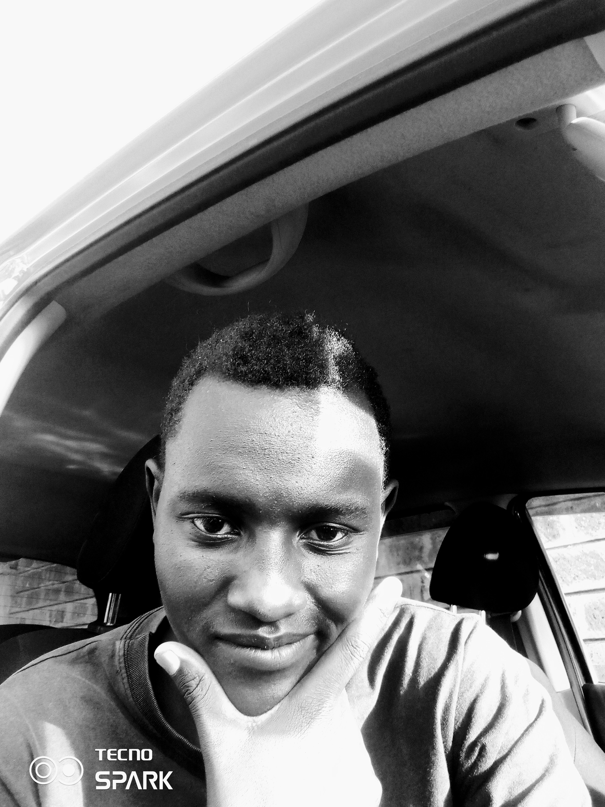
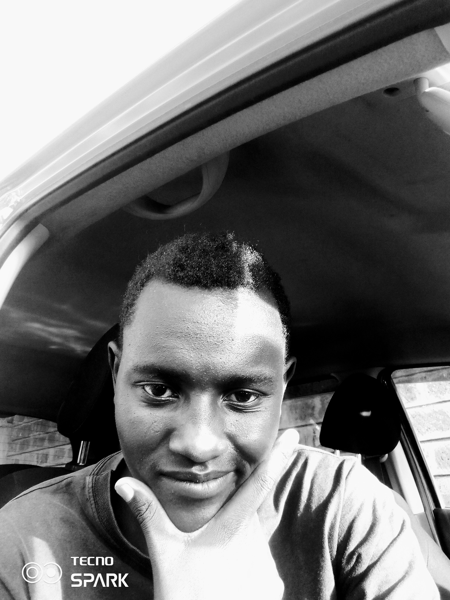

Lewis Njaci
Aspiring Fullstack Software Developer
Email: lewisjassy43@gmail.com
Location: Nairobi, Kenya
About Me
I am an aspiring software and web developer with a strong passion for learning and building applications. Currently, I am acquiring foundational knowledge in programming languages such as JavaScript, HTML, and CSS. I am excited to apply my skills and continue growing in the field.
While my experience may be limited, I am enthusiastic about tackling coding challenges and exploring different technologies. I am familiar with the basics of front-end development and have started experimenting with frameworks like React and Angular.
My goal is to create user-friendly and visually appealing websites that provide a positive user experience. I am focused on developing my problem-solving skills and improving my understanding of back-end development and database management.
As a dedicated learner, I am actively seeking opportunities to collaborate with experienced developers and contribute to real-world projects. I am eager to be a part of dynamic teams that foster knowledge-sharing and professional growth.
I am committed to staying up-to-date with the latest industry trends and best practices. With each project, I aim to enhance my skills and gain valuable insights. I believe in the power of continuous learning and look forward to embracing new challenges in the world of software and web development.
If you are interested in collaborating with an enthusiastic and driven developer who is eager to learn and contribute, I would love to connect with you and explore opportunities together.
Skills
- HTML5
- CSS3
- JavaScript
- Python
- C
- Computer Science